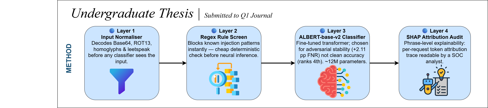
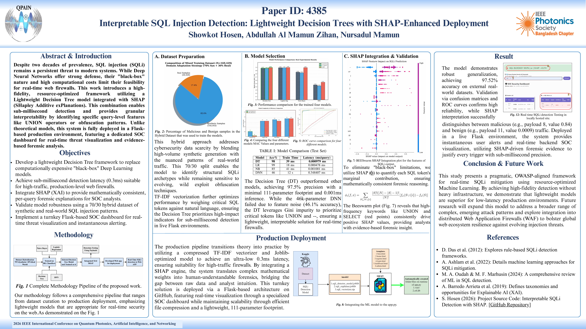
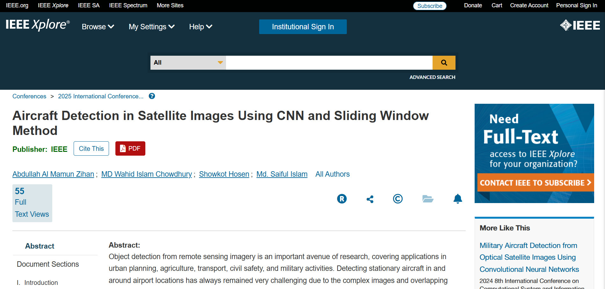

SHOWKOT HOSEN

XAI in Cybersecurity Enthusiast and ML Based Cyber Attack and Defence system Creator
ISC2 CC Pass | Cisco Ethical Hacker | R&D Focus
ABOUT ME
My journey into Engineering began with a rigorous focus on algorithmic problem-solving, where I built a strong foundation in C and C++ by solving over 65+ challenges on HackerRank. This early technical discipline evolved into a deep curiosity for Cybersecurity, leading me to master the fundamentals of Networking, Packet Tracing, and Linux Bash through the Cisco ecosystem. While navigating the complexities of early engineering, I made a strategic pivot in my third year to align my academic performance with my professional ambitions. This resulted in a significant CGPA boost, achieved while simultaneously earning the Cisco Ethical Hacker credential and developing proficiency in Python for Machine Learning. My transition into research was marked by the publication of my first co-authored paper on CNN-based satellite image classification, which laid the groundwork for my subsequent work. As a lead researcher, I have since published two additional papers as first author, focusing on the intersection of Deep Learning and security. Having recently earned the ISC2 Certified in Cybersecurity (CC) designation, I am currently specializing in Explainable AI (XAI) and LLMs for my thesis. I am driven by the goal of bridging the gap between automated security and human interpretability, and I am now seeking a PhD opportunity to develop the next generation of transparent, AI-driven defense systems.
EDUCATION
MSc in Electronics and Telecommunication Engineering
Chittagong University of Engineering and Technology (CUET)
2026 – Present | AI/ML in Cybersecurity
BSc in Electronics and Telecommunication Engineering
Chittagong University of Engineering and Technology (CUET)
2022 – 2026 | CGPA: 3.63
HSC in Science
Government City College, Chittagong
2018 – 2020
SKILLS SUMMARY
EXPERIENCES
Cybersecurity Research Student
CUET
Hands-on research on IDS/IPS and ML-based cyber defense systems. Participation in national CTF competitions and OSINT investigations.
Cyberhunt - Cybersecurity Mentorship Lead
CUET | 2025 – Present
Mentoring junior students in the fields of Cybersecurity and Machine Learning research. Organizing workshops on ethical hacking foundations.
Industrial Visit - BSCL
Focused on satellite communication infrastructure, signal monitoring, and ground station security protocols.
Industrial Attachment - DigidenIT
Focused on ASP.NET based simple dental clinic services app development with backend and frontend integrated.
PUBLICATIONS
My research focus lies at the intersection of Machine Learning and Cybersecurity, with a particular emphasis on Explainable AI (XAI).

WSN-IDS: A Duplicate-Audited, SHAP-Explainable Decision Tree for Lightweight Intrusion Detection under review
Submitted to Journal of Cyber Security Technology (Taylor & Francis)
Author: Showkot Hosen, Md. Iftakharul Islam, and Professor Dr. Md. Azad Hossain
A GridSearchCV-tuned Decision Tree IDS for LEACH-based WSNs with full SHAP explainability, duplicate-row auditing, and honest stability analysis on WSN-DS.
View Repository Data & Artifacts
PromptLight: Lightweight Prompt Injection Detection under editorial consideration
Submitted to CSA (Cybersecurity and Application, Elsevier)
Author: Showkot Hosen, with supervisors Professor Dr. Md. Azad Hossain and Md. Farhad Hossain
An ALBERT-base-v2-powered prompt injection detection system for securing LLM applications.
Read Abstract
Interpretable SQL Injection Detection: Lightweight Decision Trees with SHAP-Enhanced Deployment
2026 IEEE 2nd International Conference on QPAIN
Author: Showkot Hosen, Abdulah Al Mamun Zihan and Nursadul Mamun
IEEE Xplore Presentation
XAI-Powered Vision: Making CNN Malware Classifier Transparent for Cybersecurity
2026 IEEE 2nd International Conference on QPAIN
Author: Showkot Hosen, Turja Talukder and Md. Azad Hossain
IEEE Xplore Presentation
Aircraft Detection in Satellite Images Using CNN and Sliding Window Method
2025 International Conference on ECCE
Author: Abdullah Al Mamun Zihan, MD Wahid Islam Chowdhury, Showkot Hosen and Md. Saiful Islam
IEEE XploreACADEMIC SERVICE

Invited Reviewer (2026)
Cyber Security and Applications (Elsevier)
Invited by the editorial board to serve as a peer reviewer for manuscripts submitted to the journal.
View Certificate
Reviewer Panel Member (2026)
HKIE Transactions – The Hong Kong Institution of Engineers
Added to the journal’s reviewer panel and invited to review manuscripts within my area of expertise.
View RecognitionKEY CERTIFICATIONS
Cybersecurity

ISC2 Certified in Cybersecurity (CC) Passed

ISC2 CC Specialization from Coursera

THM Advent of Cyber 2025

THM Pre Security Path

Cisco Ethical Hacker

Penetration Testing, Threat Hunting, and Cryptography Specialist

DevSecOps Phoenix Summit 2026 Training
Machine Learning

Introduction to AI for Cybersecurity

ML and Emerging Tech in Cybersecurity
Python & Others

EDGE Python Professional Certification

Cisco Networking Academy Badges Gained
PROJECTS
SEC-IoT: Industrial IoT Monitoring
Developed a security framework using Flask and Scikit-learn to identify anomalies in industrial sensor data. It utilizes Isolation Forests and Random Forest classifiers to detect zero-day attacks and hardware malfunctions in real-time, ensuring industrial uptime.
MLWAF - ML Powered Firewall
A Web Application Firewall that replaces traditional regex-based rules with a machine learning engine. It achieves high accuracy in classifying SQL Injection and XSS payloads by analyzing request strings through TF-IDF vectorization and Deep Learning models.
Text Steganography Detection
Explored covert data defense mechanisms using Linguistic Analysis and LSB (Least Significant Bit) techniques. This project focuses on detecting hidden messages within digital text by analyzing character spacing and synonymous word substitutions using Deep Learning.
Malware Analysis: Chrome Extensions
Performed static and dynamic analysis on suspicious browser extensions to identify data exfiltration patterns. Used automated sandboxing to monitor API calls and manifest file vulnerabilities that could lead to unauthorized browser access.
Quranic Shots: E-Commerce
Built a full-stack e-commerce platform using PHP and JavaScript for digital asset distribution. Implemented a secure user authentication system and a responsive UI to facilitate the sharing and purchasing of digital Islamic content.
Infrared Communication System
A hardware-based project utilizing IR modules and microcontrollers for short-range wireless data transfer. Designed the circuit to modulate and demodulate digital signals, achieving reliable data exchange without the need for Wi-Fi or Bluetooth.
COMMUNITY CONTRIBUTION
I am passionate about sharing knowledge and mentoring. Below are two of my strategic GitHub roadmaps for the community:

Complete Cybersecurity Roadmap
A strategic guide designed for beginners to build solid foundations in networking, ethical hacking, and system security.
GitHub Resource
(ISC)² CC Preparation Roadmap
Leveraging my status as an (ISC)² Certified professional, I developed this guide to help peers master "Security Principles" and "Incident Response".
GitHub ResourceCO-CURRICULAR ACTIVITIES
Organizer of Televerse 1.0
Organized and managed a cybersecurity-focused Capture The Flag (CTF) competition at CUET. Led the technical team and defensive security concepts, coordinating logistics for national-level participation.
Competitions & Participation
- Machine Learning: BUET DL Sprint 4.0
- Capture The Flag: BCS CTF and UAP CTF
- Case Competition: Face The Case 2.0 | CUET, Semifinalist
AWARDS
Phoenix Summit 2026 Fellowship
Selected as a fellowship recipient, sponsored by Flexoptix, for the Phoenix Summit 2026 held in Dhaka (June 23–27). Completed hands-on DevSecOps training covering Docker, Trivy, and kube-bench for container security; Harbor as a secure artifact registry; and supply chain security concepts including SBOM, SCA, Cosign, Kyverno, and SLSA and joined 2 days cybersecurity biggest event in Bangladesh.
Let's Connect
Open for research collaborations in the field of AI/ML in cybersecurity.